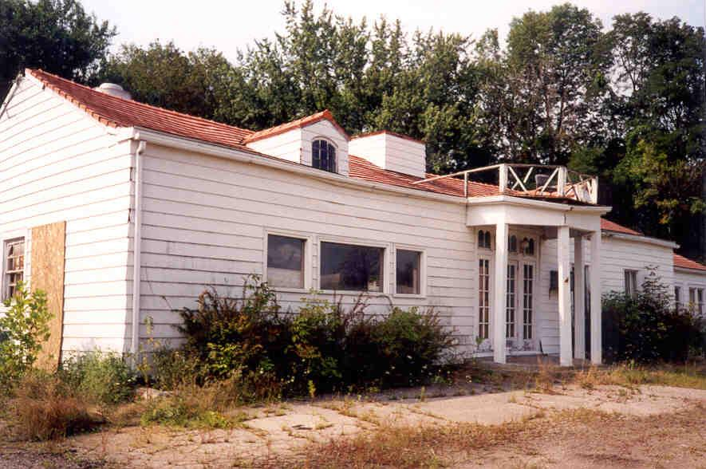
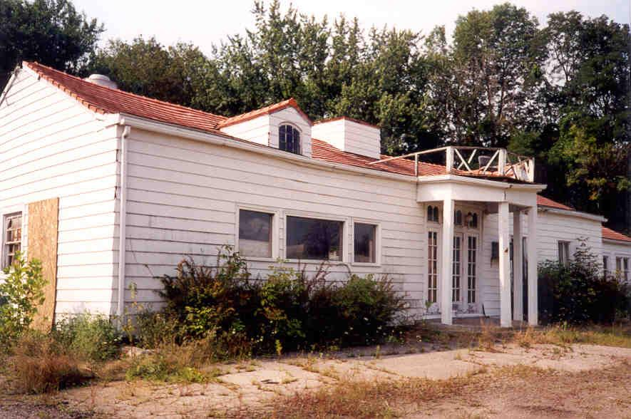
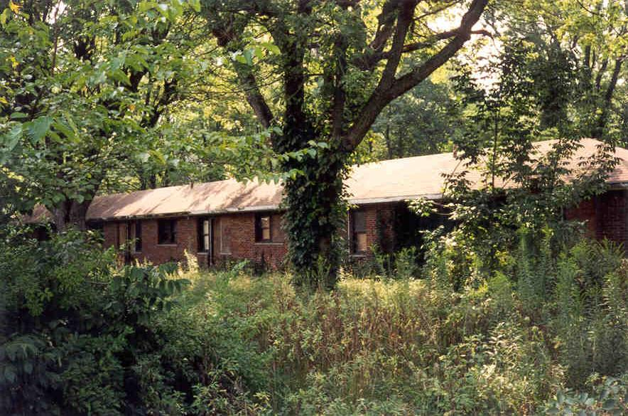

Most Columbus residents know Kirkersville as the location of the fireworks store a few miles east of the city. It was on a trip to this store around the fourth of July that I first noticed the Shamrock Motel, rotting away on Route 40 just west of town.

If you take the freeways everywhere you miss out on a lot of cool sights like this. Most people do take the freeways, though, which probably accounts for the demise of the Shamrock. At one time it stood on the National Road, a major conduit through the state, but today you don't see heavy traffic on Route 40 even during rush hour.
 

Out front is the old-fashioned sign and the office building, which may have housed a restaurant at one time. Out back and alongside the office are the rooms.

I was able to get inside the office but not the rooms, mainly because I was alone that day, and because the high weeds surrounding the place made it a haven for spiders, many of which I encountered while I was poking around. Because I am mortally terrified of spiders, I plan to return when the weather is cooler. Looking through the windows I could see mattresses and nightstands still inside the rooms. Inside the office there was an old ice machine, along with chairs and other broken furniture.

Up against the parking lot was a small brick building which might have been the night check-in--I'm not sure. And out back was a long shed with the roof caving in. I was amused to see an old computer on a desk in the ruined shed.


A really cool place with lots of character. I can't wait to get into the motel rooms.
UPDATE:
Unfortunately, I'll never get my chance. The Shamrock Motel was gutted and renovated. Today (May 2001) it's occupied by apartments. At least they didn't bulldoze it!
The Bon Air Motel, Mt. Blanchard
E-Mail
Back